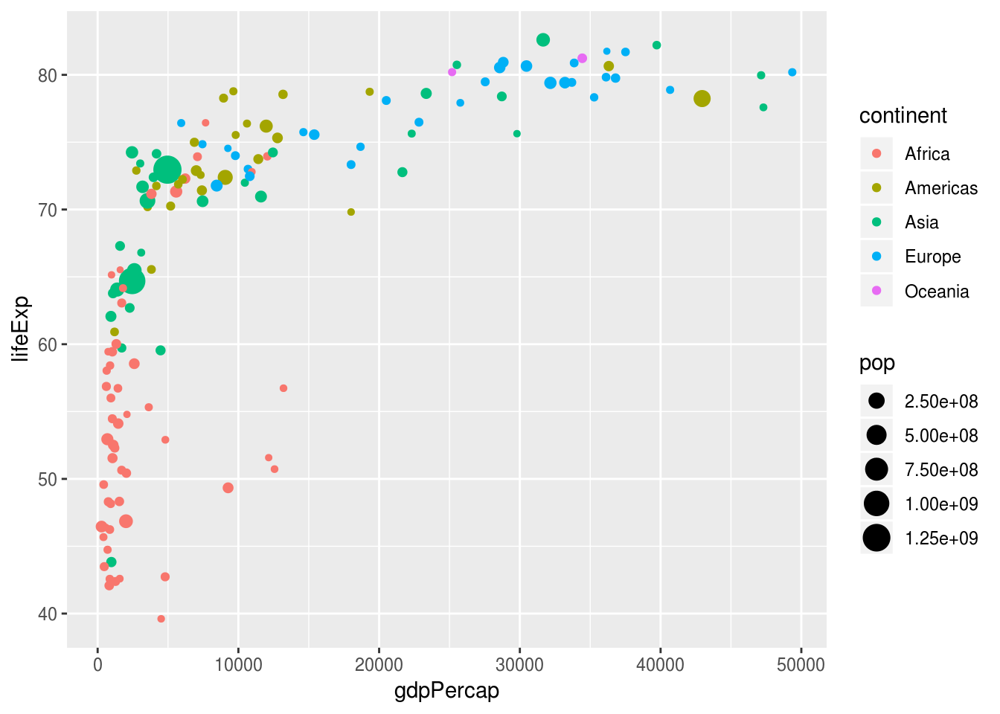
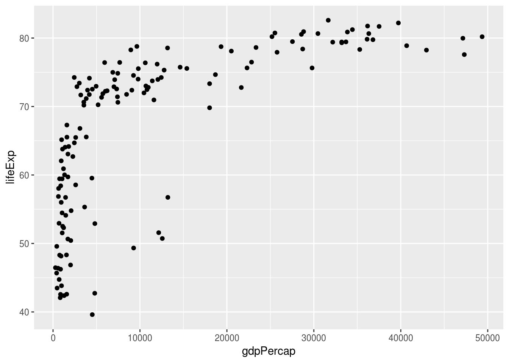
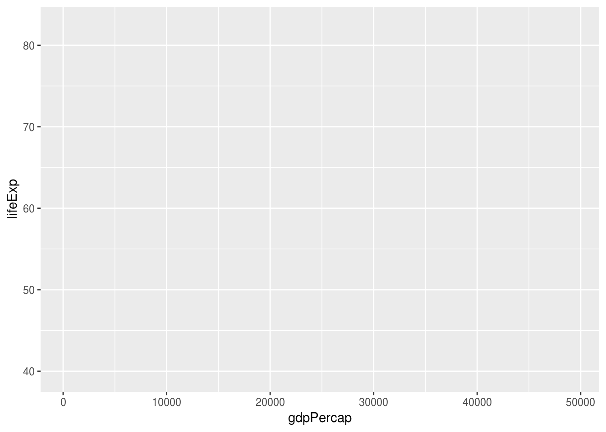
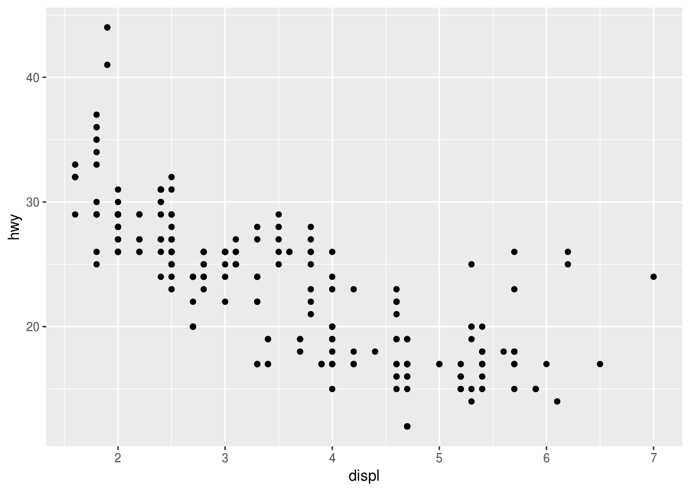
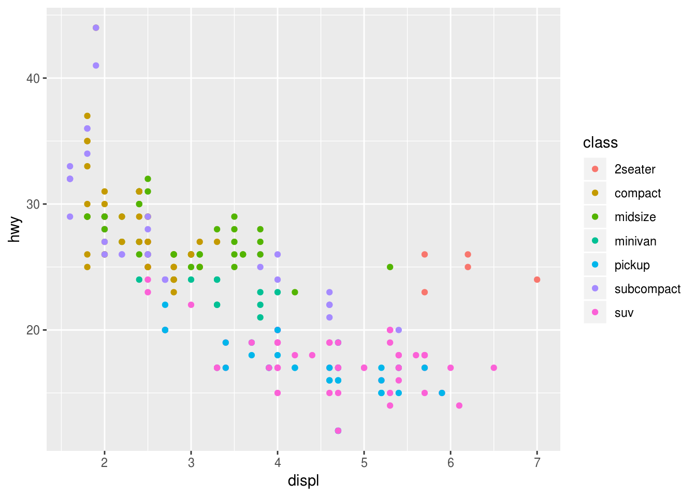
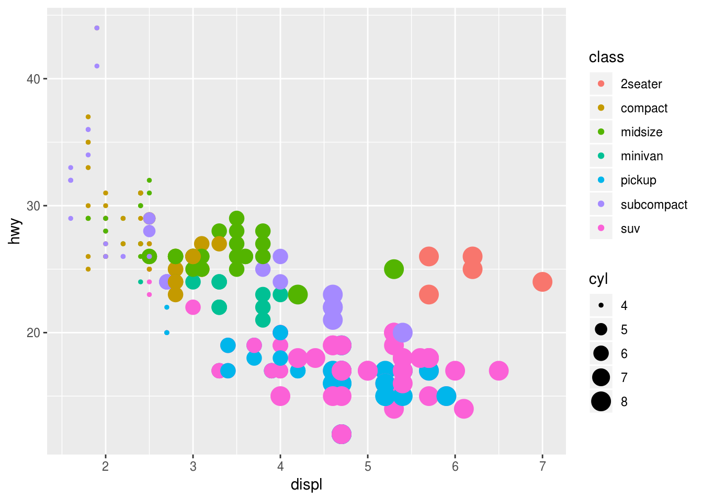
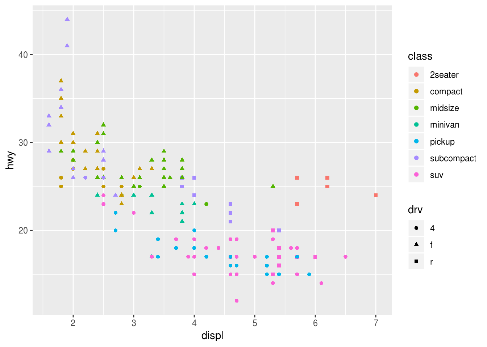
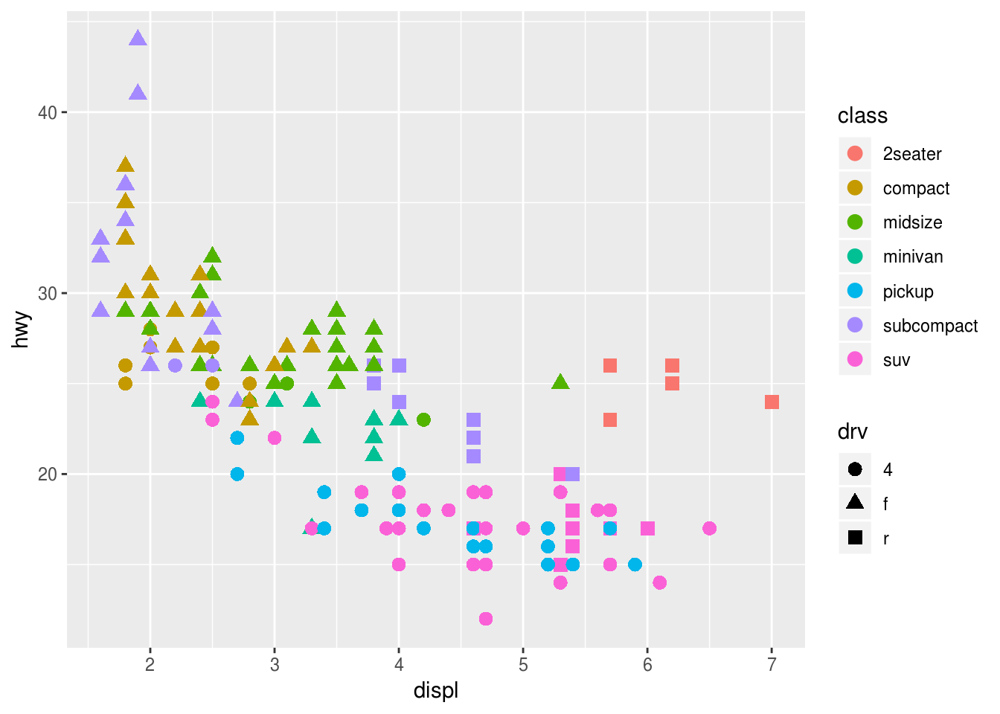
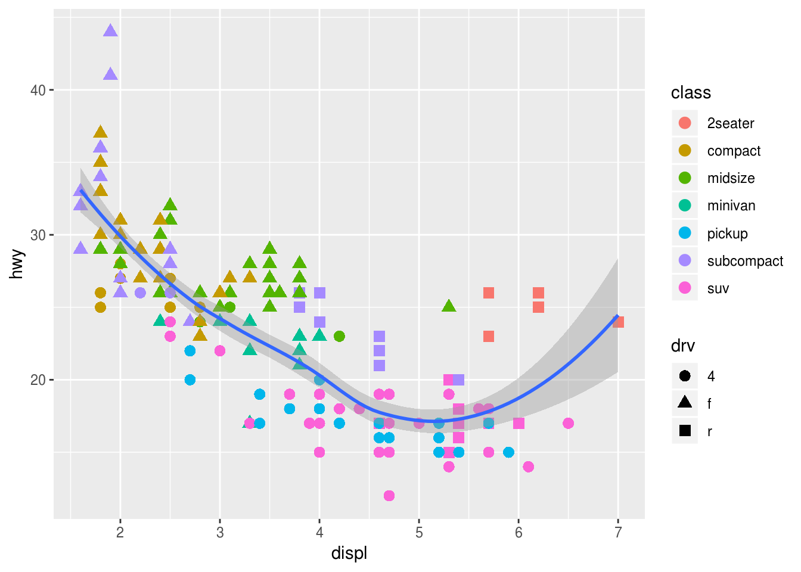
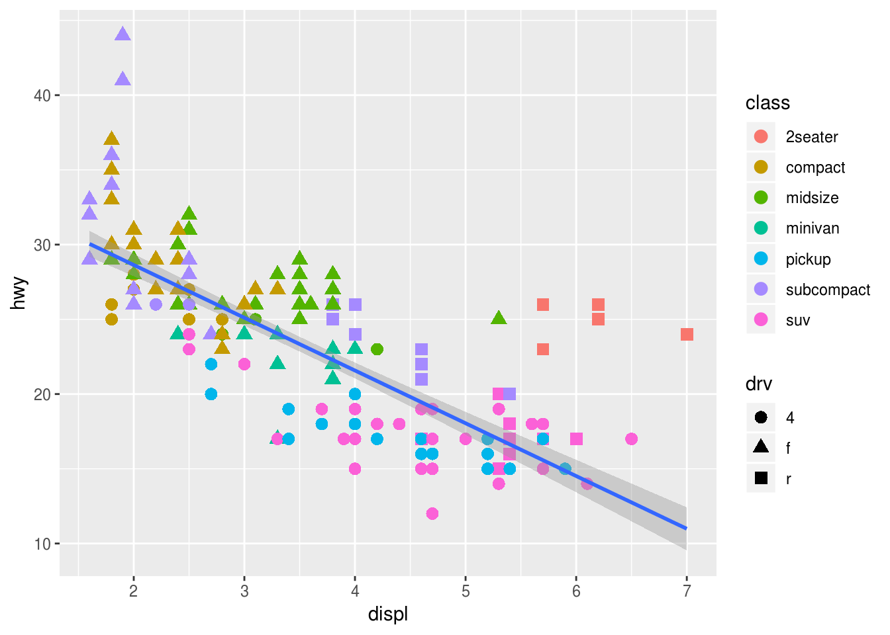

1 Grafički prikaz podataka
Prvo ćemo se zabavljati grafičkim prikazima podataka i crtanjem raznih grafika,
koristeći paket ggplot2 koji je jedan od najupotrebljinijih paketa u R-u.
Velika prednost ovog paketa je što sa vrlo malo koda možemo da pravimo dosta
bogate grafike. S druge strane, ima malo čudniju sintaksu od klasičnih grafika u
R-u, pa zahteva malo učenja. Medjutim ta sintaksa je prilično smislena i
elegentna, kao što ćemo videti kroz rad.
1.1 Uvodni primeri i napomene
Kao inicijalnu demonstraciju sile, pogledajmo sledeći grafik, na kome se vidi dosta različitih elemenata, poput raznih boja za razne promenljive, različite veličine tačaka, prikaz legende itd.

Kod koji generiše ovaj grafik je sledeči. Primetite da samo zadnja linija crta grafik, pre toga je prosto smanjivanje količine podataka.
library(ggplot2)
library(gapminder)
gapminder2007 <- gapminder[gapminder$year == 2007, ]
ggplot(data = gapminder2007) +
geom_point(mapping = aes(x = gdpPercap,
y = lifeExp,
color = continent,
size = pop))Proći ćemo kroz sve delove ovog koda vremenom i ubrzo ćete moći da pravite ovakve grafike bez problema. Prvo ipak malo teorije.
Paket ggplot2 se zasniva na takozvanoj “gramatici grafike” i uočljivo je u prethodnom kodu da se grafici prave “sabiranjem”. Zabpravo dodajemo komponentu po komponentu na grafik. Glavni delovi koje grafik ima su:
- Podaci (
data): Skup podataka koji se prikazuje - Geometrijski objekat (
geom_*): Tip geometrijskog objekta kojim se prikazuju podaci. Mogu biti tačke, linije, histogrami, itd. - Estetski parametri (
aes()): Estetski atributi koji se mogu dodeliti geometrijskim objektima. Uvek imamo x/y koordinatu, a možemo dodati i boju, veličinu, itd. Svaki estetski parametar se može primeniti na promenljivu u podacima, pa svaki element u podacima ima svoju vrednost tog parametra (npr. gore su sve tačke iz istih kontinenata isto obojene).
Grafike koristeći ggplot pravimo prateći sledeći šablon:
ggplot(data = <Podaci>) +
<geom_funkcija>(mapping = aes(<estetski parametri>))Bitno je pomenuti da ne postoji podrazumevani grafik u ggplot, već se mora dodati neki geometrijcki objekat (pozivom neke geom_* funkcije). Pozivanjem samo ggplot(data=...) dobija se prazan grafik:
ggplot(data = gapminder2007)Neki estetski parametri se mogu dodeliti i na početku, npr. odmah možemo postaviti x i y osu u pozivu ggplot, pa će ona ostati fiksna za sledeće elemente grafika. Ovako možemo nacrtati prethodni grafik (bez boja i sl.).
# sablon bi bio:
# ggplot(data=gapminder2007) +
# geom_point(aes(x = gdpPercap, y = lifeExp))
ggplot(data = gapminder2007, aes(x = gdpPercap, y = lifeExp)) +
geom_point()
Vrlo bitna napomena! Znak " + " mora stajati na kraju reda ako se prelama red. Naredni kod ne radi kako treba:
ggplot(data = gapminder2007, aes(x = gdpPercap, y = lifeExp))
+ geom_point()
## Error: Cannot use `+.gg()` with a single argument. Did you accidentally put + on a new line?1.2 Razni primeri grafika
Sada ćemo prikazati nekoliko vrsta grafika koji se mogu crtati. Gledaćemo scatterplotove, linijske grafike, histograme, boks plotove i bar plotove. Prevode sa engleskog ćemo možda smisliti.
1.2.1 Scatterplotovi
Ovi grafici su grafici koji prikazuju podatke kao tačke u ravni. Prikazaćemo nekoliko primera i navesti nekoliko svojstava koja se mogu menjati. Ne možemo preći sve jer ih je previše.
Geometrijski objekat, tj. funkcija koja se koristi u ove svrhe je geom_point.
Koristićemo za početak podatke mpg, dostupne u paketu ggplot2.
Opis podataka dobijamo pozivom ?mpg (mora biti učitan paket ggplot2). Pogledajmo šta ima u njima.
mpg## # A tibble: 234 x 11
## manufacturer model displ year cyl trans drv cty hwy fl class
## <chr> <chr> <dbl> <int> <int> <chr> <chr> <int> <int> <chr> <chr>
## 1 audi a4 1.8 1999 4 auto… f 18 29 p comp…
## 2 audi a4 1.8 1999 4 manu… f 21 29 p comp…
## 3 audi a4 2 2008 4 manu… f 20 31 p comp…
## 4 audi a4 2 2008 4 auto… f 21 30 p comp…
## 5 audi a4 2.8 1999 6 auto… f 16 26 p comp…
## 6 audi a4 2.8 1999 6 manu… f 18 26 p comp…
## 7 audi a4 3.1 2008 6 auto… f 18 27 p comp…
## 8 audi a4 q… 1.8 1999 4 manu… 4 18 26 p comp…
## 9 audi a4 q… 1.8 1999 4 auto… 4 16 25 p comp…
## 10 audi a4 q… 2 2008 4 manu… 4 20 28 p comp…
## # … with 224 more rowsNapravimo običan scatterplot koji prikazuje potrošnju automobila u odnosu na zapreminu motora.
Potrošnja (na autoputu) hwy je u miljama po galonu, a zapremina motora displ u litrima. Dakle, što je manja mpg, auto više troši.
ggplot(data = mpg, aes(x = displ, y = hwy)) +
geom_point()
Vidimo da postoji opadajući trend, tj. što veći motor imamo, potrošnja goriva raste, ali imamo neke tačke koje odstupaju od trenda pri desnom kraju slike. Unesimo malo boje u grafik da probamo da vidimo šta se dešava. Možemo da probamo da nadjemo klastere u podacima na osnovu klase vozila (kombi, SUV, mali auto, sportski itd.), koja nam je data u promenljivoj class u podacima. To prosto radimo tako što dodamo estetski parametar color = class u geom_point poziv.
ggplot(data = mpg, aes(x = displ, y = hwy)) +
geom_point(aes(color = class))
Vidimo da su ove tačke što odstupaju zapravo sportski automobili (2seater), koji imaju mnogo velike motore a malu masu, pa im je potrošnja manja nego od SUV, pikap i minivan vozila, koji vidimo da su pri dnu grafika.
Možemo da napravimo grafik tako da i veličinu tačke stavi u zavisnosti koliko cilindara ima motor. Opet, samo dodamo estetski parametar size = cyl.
ggplot(data = mpg, aes(x = displ, y = hwy)) +
geom_point(aes(color = class, size = cyl))
Grafik je pomalo smešan, ali se vidi da veliki potrošaći imaju motore sa više cilindara.
Može se menjati i oblik tačkica prosledjivanjem estetskog parametra shape. Sada u zavisnosti od tipa pogona (prednji, zadnji, sva 4 točka) imamo različit oblik.
ggplot(data = mpg, aes(x = displ, y = hwy)) +
geom_point(aes(color = class, shape = drv))
Ovde su tačke dosta sitne i ne vide se lepo oblici, tako da možemo povećati sve tačke dodavanjem argumenta size samoj funkciji geom_point.
Napomena! Ne dodajemo argument unutar aes nego van aes a unutar geom_point.
ggplot(data = mpg, aes(x = displ, y = hwy)) +
geom_point(mapping = aes(color = class, shape = drv), size = 3)
Sad je sve uočljivije. Vidimo da sportska kola (crvena) imaju uvek zadnji pogon.
Ono što je vrlo lepo kod ggplot-a je što se mogu koristiti i neke statističke funkcije. Na primer, možemo docrtati i liniju koja opisuje trend u podacima korišćenjem funkcije geom_smooth, koja napravi odredjenu aproksimaciju podataka (npr. linearni model, neki polinom i sl.) i nacrta je. Obogatimo grafik dodatno…
ggplot(data = mpg, aes(x = displ, y = hwy)) +
geom_point(mapping = aes(color = class, shape = drv), size = 3) +
geom_smooth()## `geom_smooth()` using method = 'loess' and formula 'y ~ x'
Podrazumevano je da geom_smooth koristi metodu “loess” kao aproskimaciju koja nam daje nelinearnu ocenu trenda. Najjednostavnija ocena trenda je da provučemo pravu kroz podatke korišćenjem linearne regresije. To radimo davanjem argumenta method = "lm" funkciji geom_smooth.
ggplot(data = mpg, aes(x = displ, y = hwy)) +
geom_point(mapping = aes(color = class, shape = drv), size = 3) +
geom_smooth(method = "lm")
Dobili smo najbolju pravu kroz podatke. Kao bonus imamo i traku poverenja!